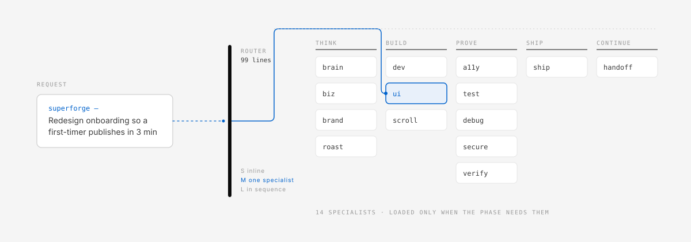

99 lines at a phase boundary
Only skill metadata is normally discoverable. The router loads when a meaningful phase starts, classifies the work and picks one primary specialist.
One thin router. Fourteen specialists. Less context.
Say superforge once at the start of a phase and describe the result you want. The router reads the task, inspects the project, sizes the work and loads only the specialist it needs — strategy, design, implementation, proof or release.

01Why a thin router
You do not need to know the specialist names. superforge is the concierge; the fourteen skills are the workshop behind it. Each request loads the smallest useful route, and nothing more.
Only skill metadata is normally discoverable. The router loads when a meaningful phase starts, classifies the work and picks one primary specialist.
Medium work loads one specialist. Large work loads them in sequence rather than all at once. A second specialist joins only at the boundary where it becomes necessary.
The specialist does the work. superforge-verify checks evidence before “done”. superforge-ship independently decides whether it may reach users.
A one-file fix loads no extra skill unless the task genuinely needs one.
Ordinary feedback continues the current route instead of re-reading the router.
Per-subagent model tiers are read only when an agent is actually dispatched.
Project state and run logs are written for corrections, failures and releases — not for small edits.
The saving comes from structure, not a promise about a vendor's price. Actual billing varies by tool, model, prompt caching and task.
02Specialists
Direct invocation still works for experts, but it is optional. Describe the outcome; the router picks the route.
| Phase | Specialist | Responsibility |
|---|---|---|
| Think | superforge-brain | Explore and judge product ideas |
| Think | superforge-biz | Market, pricing, business model and value case |
| Think | superforge-brand | Brand direction, voice and visual system |
| Think | superforge-roast | Expose weak assumptions before they reach users |
| Build | superforge-dev | Plan and implement multi-component features |
| Build | superforge-ui | Design and build Web, iOS and Android interfaces |
| Build | superforge-scroll | Cinematic scroll-driven experiences |
| Prove | superforge-a11y | WCAG, assistive technology and platform accessibility |
| Prove | superforge-test | Choose and implement valuable tests |
| Prove | superforge-debug | Root-cause debugging and failure memory |
| Prove | superforge-secure | Practical security review for small teams |
| Prove | superforge-verify | Attach evidence before any completion claim |
| Ship | superforge-ship | Decide whether a product may be released |
| Continue | superforge-handoff | Preserve session state before switching tools or threads |
03Install
The plugin installs the router, all fourteen specialists and the optional dynamic workflows. Use one install path per tool, not both.
/plugin marketplace add takaoumehara/superforge-skill
/plugin install superforge-skills@superforgeRecommended. Open a new session afterwards and start a phase with superforge.
git clone https://github.com/takaoumehara/superforge-skill.git
cd superforge-skill
./install.sh # --dry-run to preview, --update to refreshLinks every skill into the tool directories already on the machine, including ~/.agents/skills and ~/.codex/skills. On Windows use .\install.ps1.
python3 scripts/package_skills.py --claude-web
# upload dist/superforge-claude-web.zip in Customize → SkillsOne ZIP holds the router and all fourteen guides. Dynamic workflows are not available in the browser; the bundle uses the prose fallback.
| Environment | Support |
|---|---|
| Claude Code | Skills plus optional dynamic workflows |
| Codex CLI / app | Skills through ~/.agents/skills or ~/.codex/skills |
| Gemini CLI / Antigravity | Skills through their discovered skill directories |
| Claude.ai | Standalone ZIP; no dynamic workflow runtime |
04How it works
Start a meaningful phase with superforge. Keep giving ordinary feedback after that. Say it again only when you begin a different feature, a release review or another substantial phase.
superforge — Redesign onboarding so a first-time
user can publish in three minutes.Keep the previous conditions. Make the empty
state clearer, then show one preview.One issue, usually a few files. No extra skill is loaded unless the task genuinely needs one.
One UI flow, an investigation or a coordinated multi-file change. The router loads exactly one specialist.
A new feature, broad redesign, security review or release. Specialists run in order, and verification comes before completion.
| Mode | Use it for | Default behaviour |
|---|---|---|
superforge quick | One bounded correction | Handle inline; no orchestration or log by default |
superforge build | A feature or multi-file change | Plan, choose one primary specialist, implement, verify |
superforge ship | Release readiness | Verify evidence first, then run the independent release gate |
05FAQ
superforge and describe the outcome. The router chooses the specialist. Calling a specialist directly still works if you prefer.~/.claude/skills when it exists. Use one path for Claude Code — the plugin is recommended.